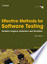
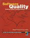
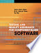
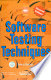

| Effective Methods for Software Testing | ||
|---|---|---|
| Author: | William E. Per |  |
| Publisher: | Wiley India | |
| Edition: | 2nd Edition, 2008 | |
| E-Book: | Download E-Book | |
| Software Quality | ||
|---|---|---|
| Author: | Mordechai Ben-Menachem |  |
| Publisher: | Thomson Learning publication | |
| Edition: | 1st Edition, 2008 | |
| E-Book: | Download E-Book | |
| Testing and Quality Assurance for Component-based Software | ||
|---|---|---|
| Author: | Jerry Gao ,H.-S. Jacob Tsao |  |
| Publisher: | Artech House Publishers | |
| Edition: | 2nd edition | |
| E-Book: | Download E-Book | |
| Software Testing Techniques | ||
|---|---|---|
| Author: | BoriesBeizer |  |
| Publisher: | Dreamtech Press | |
| Edition: | 2nd edition | |
| E-Book: | Download E-Book | |